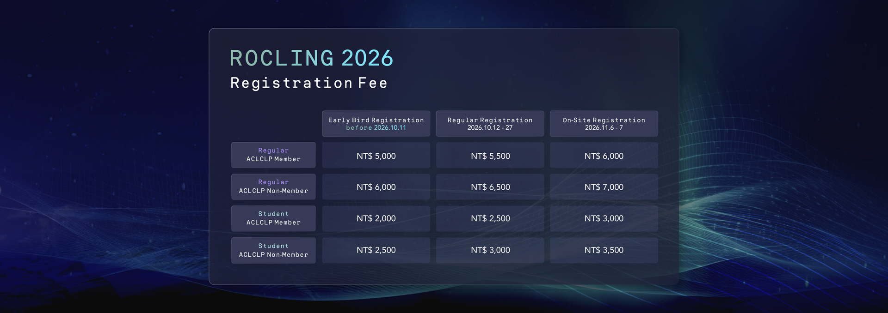

THE 38TH CONFERENCE
ON COMPUTATIONAL LINGUISTICS AND SPEECH PROCESSING
(ROCLING 2026)
November 6th–7th, National Tsing Hua University, Hsinchu, Taiwan
📢 Announcements
- Paper Submission Due — Original Deadline: July 20, 2026 · Extended Deadline: August 10, 2026
Welcome
ROCLING 2026
Welcome to the 38th Conference on Computational Linguistics and Speech Processing (ROCLING 2026), to be held in Hsinchu, Taiwan, from November 6–7, 2026.
ROCLING 2026 invites paper submissions reporting original research results, system development experiences, and real-world applications. Each submission will be reviewed based on originality, significance, technical soundness, and relevance to the conference.
Tutorial
Tutorial
Hung-Yu Kao
Department of Computer Science at National Tsing Hua University
Beyond Static Context: Frontiers and Engineering Practices in LLM Agent Memory Management
從靜態上下文到活體記憶：LLM Agent 記憶管理的前瞻技術探討與實作
Abstract: This tutorial focuses on memory management technologies for Large Language Model (LLM) Agents, exploring the transition from static context to dynamic and continuously evolving memory mechanisms. Through practical examples and hands-on demonstrations, participants will gain insights into the design and applications of Agent memory systems.
Bio: HUNG-YU KAO received the B.S. and M.S. degrees in Computer Science from National Tsing Hua University in 1994 and 1996, respectively. In July 2003, he received a PhD degree from the Electrical Engineering Department, National Taiwan University. He is currently a professor at the Department of Computer Science of National Tsing Hua University (NTHU). He was the vice Dean of the College of EECS in National Cheng Kung University (NCKU) from 2021 to 2024 and the Director of Dept. CSIE of NCKU from 2018 to 2021. He was the chair of IEEE CIS Tainan Chapter from 2017 to 2021.
His research interests include Natural Language Processing, Machine learning, Web information retrieval/extraction, knowledge management, data mining, social network analysis, and bioinformatics. He has published over 140 research papers in refereed international journals (IEEE TKDE, TAI, TASLP) and conference proceedings, including AAAI, ACL, and EMNLP. He is the Associate Editor of IEEE/ACM Transactions on Audio, Speech, and Language Processing. He is a member of IEEE and ACM.
Keynote
Keynote Speeches
Keynote I
Kotaro Funakoshi
Institute of Science Tokyo
Towards attentive machines: from a conversation game to respiration and swallowing rehabilitation
Abstract: TBA
Bio: Kotaro Funakoshi is currently an associate professor at the Institute of Integrated Research, Institute of Science Tokyo since 2020. Formerly with Honda Research Institute Japan Co., Ltd. from 2006, he also served as a program-specific associate professor with the Cooperative Intelligence Joint Chair at Kyoto University from 2017 to 2020. He received his B.E., M.E., and Dr.Eng. degrees from Institute of Science Tokyo (formerly Tokyo Institute of Technology) in 2000, 2002 and 2005, respectively. His research interests include natural language processing, multi-modal dialogue systems, and human-machine interaction. He recently served the general chair of a Japanese domestic conference, the 31st Annual Meeting of the Association for Natural Language Processing (NLP 2025), and served a program chair of an international conference, the 27th Annual Meeting of the Special Interest Group on Discourse and Dialogue (SIGDIAL 2026).
Keynote II
Berrak Sisman
Johns Hopkins University
Recent Advances in Expressive, Secure, and Health-Centric Speech Intelligence
Abstract: In this talk, Dr. Sisman presents recent research from her lab at the Johns Hopkins University Center for Language and Speech Processing (CLSP) on human-centered speech intelligence. The keynote highlights recent progress in controllable speech synthesis and voice conversion, robust speech deepfake detection under expressive conditions, mechanistic interpretability of large audio-language models, and clinical applications for speech and language technologies, such as Alzheimer's and depression detection.
Bio: Berrak Sisman is an Assistant Professor of Electrical and Computer Engineering at Johns Hopkins University (JHU), where she leads the Speech and Machine Learning (Smile) Lab as part of the Center for Language and Speech Processing (CLSP). She received her Ph.D. from the National University of Singapore. Her research centers on human-centered speech and audio intelligence, focusing on expressive speech synthesis, voice conversion, speech deepfake detection, and the security, privacy, and health information encoded in the human voice. Her research has received multiple recognitions, including the 2026 Speech Communication Best Journal Paper Award, an NSF CAREER Award (2024), Amazon Faculty Awards (2023, 2025), and the Singapore Ministry of Education Tier 2 Award (2023). Her work spans secure AI, healthcare, human–machine interaction, and assistive technologies. She is an Associate Editor for IEEE Transactions on Affective Computing, and an elected member of the IEEE Speech and Language Technical Committee (SLTC). She serves on the ISCA Board.
Program
Conference Program
Click a session title to show or hide its papers.
Day 1 | Friday, November 6
08:30–09:00
Registration
09:00–09:10
Opening Ceremony
Location: CS Auditorium, B1, C. L. Liu Building
09:10–10:30
Parallel Sessions
Oral I — Language Models, Retrieval and Evaluation Chair: Fernando H. Caldero Location: R128, C. L. Liu Building
- #28 A Dual-Layer Knowledge Graph-Enhanced RAG Framework with Legal Equivalence Evaluation for Taiwanese Used Car Disputes
- #34 BGCT: BM25-Guided Contrastive Training for Generative Retrieval
- #19 大型語言模型結合評分規準於高中學生文本摘要自動批改之適用性研究
- #42 Benchmarking Chinese Tenor–Vehicle Generation: Protocols, Baselines, and Semantic Evaluation
Oral II — Speech and Audio Processing Chair: TBA Location: R129, C. L. Liu Building
- #61 Does Regional Decoder Specialization Help Low-Resource ASR Based on the SLAM-ASR Framework?
- #23 Deployment Risk Probe Framework (DRPF): Complementing CER with Actionable Failure Modes
- #21 Spoofed Audio Detection in Multi-Speaker Conversations: A Dataset and Parallel Modular Diarization-Detection Pipeline
- #20 Perceptual MDCT Audio Coding with Budget-Consistent Psychoacoustic Bit Allocation
10:30–11:00
Coffee Break
11:00–12:20
Parallel Sessions
Oral III — Speech and Conversational AI Chair: An-Zi Yen Location: R128, C. L. Liu Building
- #35 GTCRN-SS: Lightweight Causal Speech Separation With Residual Allocation and Reconstruction Refinement
- #51 EHRA: An Effective Hotword Retrieval Approach for Contextual ASR
- #49 EmoReflect: A Reflective Emotion Reasoning Framework for Empathetic Support Conversations
- #32 Whose Taiwan? Cross-Lingual Geopolitical Framing in the Representations of Large Language Models
Shared Task — Chinese Dimensional Sentiment Analysis Chair: Lung-Hao Lee Location: R129, C. L. Liu Building
- #50 ROCLING-2026 Shared Task: Chinese Dimensional Sentiment Analysis for New Immigrants’ Feeling Texts
- #44 aoff123 at ROCLING-2026 Shared Task: A Validation-Guided Protocol for Staged Domain Adaptation in Chinese Dimensional Sentiment Analysis
- #53 SCUNLP at ROCLING-2026 Shared Task: Augmenting BERT with LLM-Generated Affective Text for Valence-Arousal Prediction of New Immigrants' Texts
- #27 CYUT at ROCLING-2026 Shared Task: Perplexity-Guided Target-Domain Adaptation for Chinese Dimensional Sentiment Regression
12:20–14:00
Lunch
14:00–15:00
Keynote I · Kotaro Funakoshi
Location: CS Auditorium, B1, C. L. Liu Building
Towards attentive machines: from a conversation game to respiration and swallowing rehabilitation
Chair: Chi-Chun Lee
15:00–15:30
Coffee Break
15:30–17:00
Poster Session I
Poster Session I Location: 1F Lobby, C. L. Liu Building
- #30 Fact over Fiction: Detection of Pathological Hallucinations in Sinhala-to-English Neural Machine Translation
- #46 NCKU_NLP at ROCLING-2026 Shared Task: Source-Aware Lexicon-Augmented Regression for Valence–Arousal Prediction
- #60 Board-Feedback Closed-Form Ensembling with LLM Direct Scoring for Chinese Valence–Arousal Regression in New Immigrant Texts
- #15 Predicting the Difficulty of Chinese as a Second Language Test Items Based on Machine Learning Models: A Case Study on Reading Comprehension
- #33 A Pilot Study on Child Interaction Safety: Benchmarking LLMs on Mandarin-Traditional (Zh-TW) Child Language Data for Ages 11–12
- #26 Chinese Medical Question Intent Classification Based on Domain Encyclopedia Enhanced Language Models with Knowledge Graph Fine-tuning
- #10 從鍵位到語意：推理式大型語言模型在雙語夾雜輸入法之應用
- #22 Seasonal Consumer Preference Analysis Using Unstructured Text Mining: A Case Study of @cosme Beauty Community Reviews
- #45 Check Before You Commit: Selective, Puzzle-Internal Verification on LingOly-TOO
- #55 LocalPIECE: An Annotation-Free Framework for Resource-Efficient News Timeline Construction
- #59 Evidence Before Generation: A Provenance-Aware Audit of Graph-Assisted Retrieval for Taiwanese Ethnohistory
- #48 Synthesizer-Enhanced Bidirectional Encoders for Large-scale Scientific Language Editing Evaluation
18:00–20:00
Conference Banquet
Day 2 | Saturday, November 7
08:30–09:00
Registration
09:00–10:00
Keynote II · Berrak Sisman
Location: CS Auditorium, B1, C. L. Liu Building
Recent Advances in Expressive, Secure, and Health-Centric Speech Intelligence
Chair: TBA
10:00–10:30
Coffee Break
10:30–12:10
Parallel Sessions
Oral IV — Language Model Analysis and Reasoning Chair: Po-Chih Kuo Location: R128, C. L. Liu Building
- #3 Leveraging Open-Source Language Models for Privacy-Preserving Text-to-SQL Generation in Electronic Health Records
- #6 Answer-Boundary Extraction Can Change Measured Prompt Effects: Sequential Factorial Evidence from ASDiv and DROP
- #7 Radical-Aligned Structure in Multilingual Transformer Representations of Chinese Characters: A Controlled Empirical Study
- #54 Small-Model Linguistic Reasoning under Compute Constraints
Special Session — Creativity and Language Play in Digital Discourse Chair: Siaw-Fong Chung Location: R129, C. L. Liu Building
- #38 Introducing Creativity and Language Play in Digital Discourse: Insights from Creative Metaphors
- #8 Language Play as a Marker of Authenticity in Platform-Mediated Communication
- #2 When AI Plays the Cultural Game: AI-Mediated Regeneration of Penghu Bokua as Language Play in Digital Discourse
- #9 When Guardrails Meet Internet Slang: A Preliminary Study of Bidirectional Safety-Lag in Traditional Chinese Prompt Injection
- #57 “Far More Remains”: Language Play and Digital Remediation in Lilit Phra Lo
- #58 Punning for Persuasion: Naming Strategies and Evaluative Meaning in the 2025 Taiwanese Mass Recall Campaigns
12:10–13:30
Lunch
13:30–14:30
Planning Report on Natural Language and Speech Signal Processing, NSTC Division of Intelligent Computing
Location: R127, C. L. Liu Building
國科會智慧計算學門 自然語言與語音處理領域規劃報告
Chair: Liang-Chih Yu
14:30–15:00
Coffee Break
15:00–16:20
Parallel Sessions
Oral V — Taiwanese Languages and Low-Resource NLP Chair: Chuan-Jie Lin Location: R128, C. L. Liu Building
- #62 台灣南島語新詞表達推薦研究初探
- #47 Corpus-Grounded Reverse Verification and Abstention for Extremely Low-Resource Paiwan Translation
- #63 CTC-Adapted Multi-Layer SSL Representations to Complement GOP for Taiwanese Hakka Pronunciation Assessment
- #29 Fantastic Taiwanese Hokkien Corpora and Where to Find Them: Bootstrapping Low-Resource Speech and Text via Off-the-Shelf LLMs and TTS
Poster Session II Location: 1F Lobby, C. L. Liu Building
- #1 Trilingual Detection-based Text Line Recognition for Sinhala, Tamil, and English
- #4 SINBRIEF: A Hybrid Framework for Abstractive Text Summarisation of Sinhala Legal Documents
- #24 Sundanese Discourse Particles in Dialogue: A Human-Annotated Corpus with Computational Baselines
- #22 Seasonal Consumer Preference Analysis Using Unstructured Text Mining: A Case Study of @cosme Beauty Community Reviews
- #25 基於開源大型語言模型設計書籍摘要形成性回饋系統
- #36 Improving Protein-Protein Interaction Extraction via Intermediate-Task Transfer Learning with Pretrained Language Models
- #43 Structure Over Semantics: A Controlled Re-Evaluation of Multi-Party Conversation Disentanglement
- #11 Lexical and Syntactic Feature Fusion for Question Type Classification
- #13 PLM: Large Language Models for Patent Concept and Innovation Support
- #41 Linguistics Changes as Viewed From the ‘Knowledge Database of Diaries in Taiwan’ (1930s-1960s): A Quantitative Study
- #18 Zero-Shot Soft Labeling of Radiology Findings in Chest X-ray Reports Using a Large Language Model
- #5 ConvoDrift: A Multi-Turn Conversational Dataset for Modeling Stylistic Tone Evolution
- #31 以 899 種南島語言數詞評估開放權重大型語言模型的構詞分析表現初探 / Evaluating Morphological Analysis Performance of Open-Weight LLMs Using Numerals from 899 Austronesian Languages: A Preliminary Study
16:20–16:30
Closing Ceremony
Location: CS Auditorium, B1, C. L. Liu Building
Call for Papers
ROCLING 2026
ROCLING 2026 offers multiple submission tracks to accommodate different publication needs:
-
Online submission system:
Paper submissions must use the official ROCLING 2026 style templates (Latex and Word), which can be downloaded Here. Submission is electronic, using the EasyChair conference management system. The submission site is available at https://easychair.org/conferences/?conf=rocling2026
As the review process will be double-blind, papers must not include authors' names or affiliations. Furthermore, self-references that reveal the author's identity will be rejected. Papers may include links to resources (software and/or data) or to artifacts described in the paper, but these should also be anonymized.
Archival Track:
Papers accepted in this track will be published in the ROCLING
2026 conference proceedings and included in the
ACL Anthology. These
submissions must present original, unpublished work. Papers in the
archival track are eligible to compete for best paper awards.
- Non-Archival Track: This track provides an opportunity to present research without formal publication in the proceedings. We welcome submissions of papers currently under review at other venues, provided submitting to ROCLING does not violate the anonymity policies of those venues, as well as papers intended for future submission elsewhere. This allows authors to share their ongoing or completed work with the ROCLING community while preserving their ability to publish in other venues. Papers in this track will NOT be included in the conference proceedings or ACL Anthology and are NOT eligible for best paper awards.
- Special-Session Track: Papers submitted to this track will follow the same submission process as the main conference but will be reviewed independently by specialized committees. Papers accepted in this track will be included in the conference proceedings and are NOT eligible for best paper awards.
Authors should clearly indicate their preferred track during submission. All tracks will undergo peer review to ensure high quality presentations at the conference. A number of papers will be selected and invited for extension into journal versions and publication in a special issue of the International Journal of Computational Linguistics and Chinese Language Processing (IJCLCLP) .
| Natural Language Processing | Speech Processing |
|---|---|
|
|
Registration
ROCLING 2026 Registration

註冊說明 / Registration Details
一般參與者且不具學生身份者需註冊 Regular Fee。一般參與者且具學生身份者可選擇註冊 Student Fee。
A regular fee must be paid by the general participants (not a student). Students (general participants) can choose to pay the student fee.
每篇會議論文(包含shared tasks)的發表至少要有一位作者在早鳥註冊截止前繳交一般報名費 (regular fee)。
Before early registration due, each publication paper (including shared tasks) must have at least one author pay a regular fee.
報名費含大會午餐、茶點及晚宴，報名費一經繳費後恕不接受退費，會後將郵寄相關資料予報名者。
Registration fee includes lunches, coffee breaks, and banquet. Registration fees are non-refundable. International registrants have to pay by credit card only (Visa or MasterCard).
報名費收據將於會議當日報到時交付。
Receipt will be provided on-site.
ACLCLP Member 為「中華民國計算語言學學會」之有效會員。本年度尚未繳交年費之舊會員或失效之會員，與會身份/Category請勾選「….(會員+會費)」，勿再重複申請入會。非會員欲同時申請入會者，請先至學會網頁之「會員專區」申請加入會員；報名時「與會身份/Category」請勾選「….(會員+會費)」。
以「學生新會員」及「學生非會員」身份報名者，請於報名時上傳學生身份證明。
A copy of a valid student ID must be uploaded into the system when registering as a student.
贊助單位敬請於10月27日前完成報名手續。
Sponsors should register before October 27.
報名及繳費期限 / Important Dates for Registration
-
Early Registration: 10/11 以前，報名費應於 10/17 前繳交。
Early registration due by October 11. Payment must be received before October 17. -
Late Registration: 10/12 至 10/27，報名費應於 10/28 前繳交，線上刷卡繳費者需於 10/31 前完成繳費。
Registration between October 12 and October 27. Payment must be received before October 31. -
On-Site Registration: 10/27 線上報名截止，擬參加者，請至大會現場報名。
The registration site will be closed on October 27. After that, please register on-site.
Methods of Payment
郵政劃撥/Postal：
戶名：中華民國計算語言學學會
帳號：19166251
同一單位多位報名者可合併劃撥，請於劃撥通訊欄中註明「ROCLING及註冊編號或報名者姓名」。
線上刷卡繳費 / Credit card on-line.
For registration inquiries, please contact
聯絡人：何婉如 小姐（中華民國計算語言學學會/ACLCLP）
E-mail：aclclp@aclclp.org.tw
Phone Number: 02-27881638
Workshop
| Creativity and Language Play in Digital Discourse |
|---|
|
Creativity and language play are central to human communication and are increasingly visible in digital discourse. Online environments such as social media, video platforms, and interactive communities provide rich contexts for the emergence of creative language practices, including wordplay, metaphor, stance-taking, and multimodal expression. With the growing presence of AI-mediated interaction, these practices are further reshaped by new forms of human-machine engagement. Research on creativity and language play has drawn on diverse theoretical and methodological traditions, including corpus linguistics, discourse analysis, pragmatics, cognitive linguistics, and computational approaches. However, existing work suggests that these phenomena cannot be fully accounted for from a single perspective. Creativity in digital discourse emerges through the interaction of linguistic form, constructional patterns, speaker agency, audience interpretation, and cognitive processes, while also being shaped by platform affordances, cultural norms, and interactional dynamics. This workshop aims to bring together researchers working on creativity and language play in digital discourse from multiple perspectives. It seeks to foster dialogue across linguistic and computational approaches and to develop a more integrated understanding of how creative language use is produced, interpreted, and modeled in contemporary digital contexts. For inquiries, please contact |
| CFP-Special Session |
|
Topics of Interest We invite submissions on topics including, but not limited to:
Submission Guidelines Submission format: Papers should follow the ROCLING 2026 submission format and requirements https://easychair.org/conferences/?conf=rocling2026 Paper Submission Due |
Submission and Event Timeline
Original Deadline: July 20, 2026
Extended Deadline:
August 10, 2026
Last date to submit papers.
September 18, 2026
Notifications regarding paper acceptance will be sent.
October 5, 2026
Camera-ready versions of accepted papers must be submitted.
November 6–7, 2026
ROCLING 2026 takes place in Hsinchu, Taiwan.
Venue
Conference Location
C.L. Liu Building
Electrical Engineering and Computer Science Building
Organizing Committee
Conference Team
Yi-Shin Chen (陳宜欣)
National Tsing Hua University
Hung-Yu Kao (高宏宇)
National Tsing Hua University
Po-Chih Kuo (郭柏志)
National Tsing Hua University
Lung-Hao Lee (李龍豪)
National Yang Ming Chiao Tung University
An-Zi Yen (顏安孜)
National Yang Ming Chiao Tung University
Yu Tsao (曹昱)
Academia Sinica
Fernando Henrique Calderon Alvarado (費南多)
Fu Jen Catholic University
Carlos Argueta (安凱若)
National Tsing Hua University
Tzu-Mi Lin (林孜彌)
National Yang Ming Chiao Tung University
Siaw-Fong Chung (鍾曉芳)
National Chengchi University
Sponsors
Our Sponsors
Contact
Contact Information
Email: itliu@mx.nthu.edu.tw
Phone: +886-3-5715131 #33495
Contact Person: Trista Liu